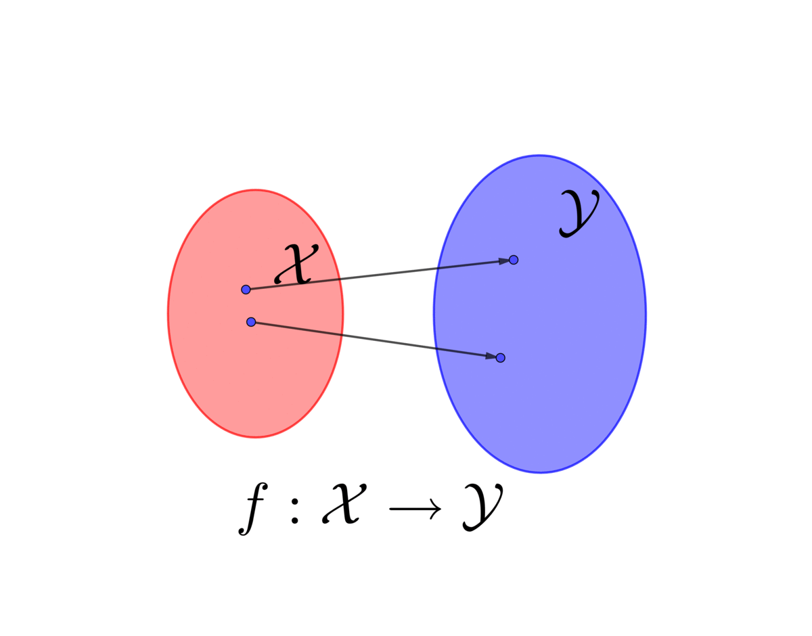
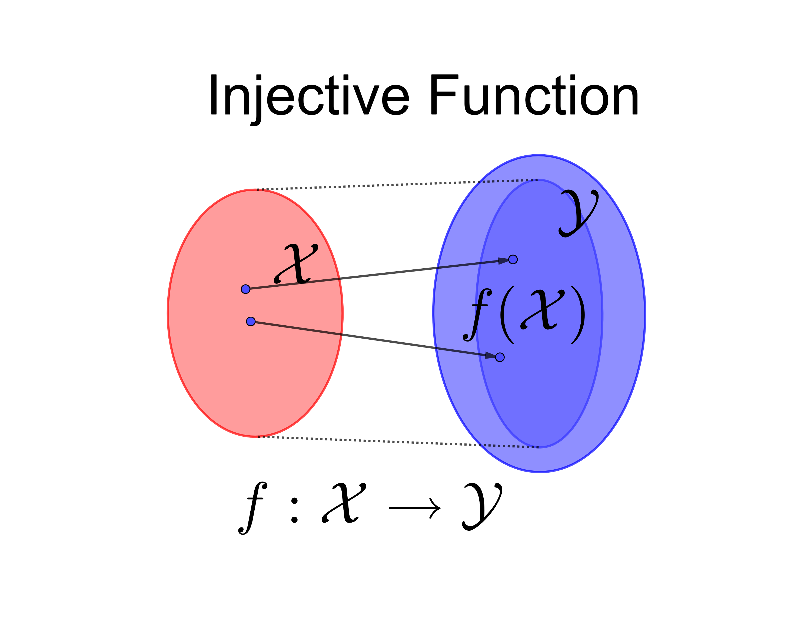
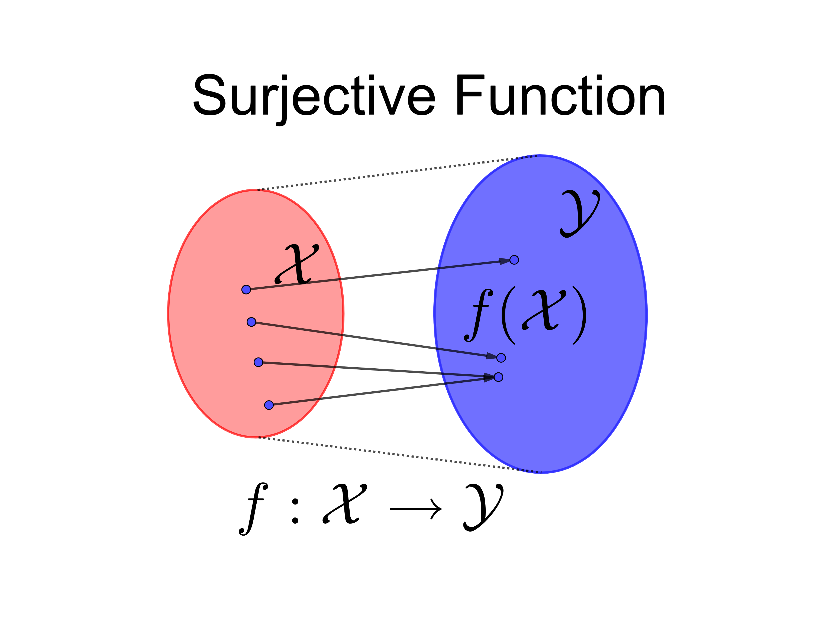
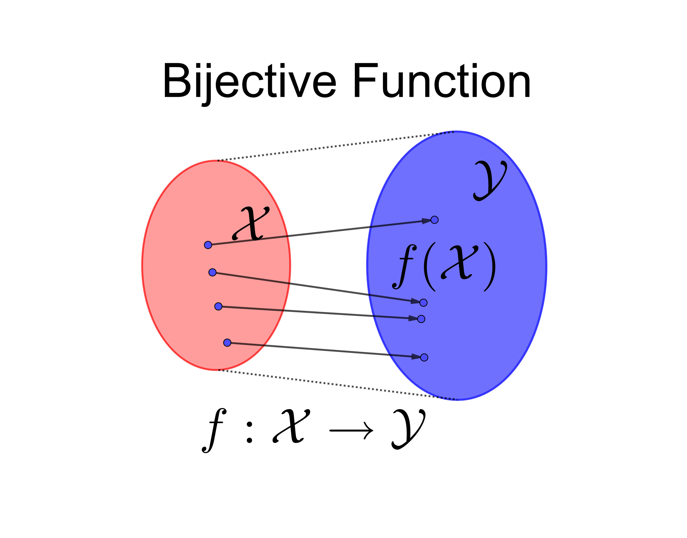

Set theory and the first-order predicate logic are pretty much the foundation of modern mathematics. If logic gives us the ability to do reasoning, set theory gives us the objects to reason about. The combination of the two provides us with the strength of constructing rigorous but concise rationales. Set theory starts with some of the simplest ideas and extends them in a reasonably straightforward way to encompass some astonishingly complicated ones.
A set refers to a collection of objects.8 When we say “objects,” it means that they should be logically distinguishable. That is, if \(x\) and \(y\) are two objects, \(x=y\) and \(x\neq y\) cannot hold simultaneously ( principle of contradiction and principle of the excluded third). When the definition of an object makes sense, it is known as showing that the object is well defined. The objects could be some elements/members, like red, white, blue, or some numbers \(1,2,\dots,n\), or some variables, \(x_{1},x_{2},\dots,x_{n}\). From now on, we will use the calligraphic letter to denote a set. For example, if \(\mathcal{X}\) is a set of \(x_{1},x_{2},\dots,x_{n}\), then we write the collection as \(\mathcal{X}=\{x_{1},\dots,x_{n}\}\).
A set can have just one member, e.g., \(x\), then this set \(\{x\}\) is called singleton. If an object \(x\) is a member of a set \(\mathcal{X}\), we write \(x\in\mathcal{X}\) or say \(\mathcal{X}\) contains \(x\). If \(x\) is not a member of \(\mathcal{X}\), we denote \(x\notin\mathcal{X}\). The empty set indicated by \(\emptyset\) has no object. Here are some other definitions for the relations of sets:
Subset: \(\mathcal{A}\subset\mathcal{B}\) means that if \(\forall x\in\mathcal{A}\), then \(x\in\mathcal{B}\). It is the set-theoretic version of logical implication.9 Very often for \(\mathcal{A}\subset\mathcal{B}\), we also say a set \(\mathcal{A}\) is included in a set \(\mathcal{B}\).
Union: \(\mathcal{A}\cup\mathcal{B}\) means that if \(x\in\mathcal{A}\cup\mathcal{B}\), then \(x\in\mathcal{A}\) or \(x\in\mathcal{B}\). It is the set-theoretic version of OR.
Intersection: \(\mathcal{A}\cap\mathcal{B}\) means that if \(x\in\mathcal{A}\cap\mathcal{B}\), then \(x\in\mathcal{A}\) and \(x\in\mathcal{B}\). It is the set-theoretic version of AND.
Complement: \(\mathcal{A}^{c}\) means that if \(x\in\mathcal{A}^{c}\), then \(x\notin\mathcal{A}\). It is the set-theoretic version of logical negation.
Equivalence: If \(\mathcal{A}\subset\mathcal{B}\) and \(\mathcal{B}\subset\mathcal{A}\), then two sets are equivalent \(\mathcal{A}=\mathcal{B}\). This is set-theoretic version of logical bicondition.
The [predicates] can be simplified in the set-theoretic setting. When the sets consist of those elements satisfying some condition or possessing some specified property, we can define such a set as \(\mathcal{X}=\{x\,|\, S(x)\}\) where the condition \(S(x)\) is precisely the predicate in logic. Sometimes the expression can be written as \(\mathcal{X}=\{x\,:\, S(x)\}\). The vertical line or the colon means “such that.” This set-theoretic expression makes the sentence more compact. If we have composed predicates such that 1) \(A(x)\) is true iff \(x\in\mathcal{A}\); 2) \(B(x)\) is true iff \(x\in\mathcal{B}\); then the combination \(A(x)\vee B(x)\) is true iff \(A(x)\) and \(B(x)\) are both true. These composed predicates can be put in a simpler set-theoretic definition \[\mathcal{A}\cap\mathcal{B}=\left\{ x\,|\, x\in\mathcal{A}\mbox{ and }x\in\mathcal{B}\right\}.\] As we have seen, set theory is closely intertwined with first-order predicate logic. In general, these two can form a nicely closed formal system: sets provide objects for which the logic can talk about, and logic provides tools for talking about the sets and their objects.
The predicates give some descriptions of a relationship between the variable \(x\) and \(S(x)\), the object represented by the variable. The usual way of establishing such a relation for numerical objects is thorough a function. A function is a rule that, for each element in some set \(\mathcal{X}\) of possible inputs, assigns a potential output. More formally, the definition of a function relies on a set-theoretic operation called the Cartesian product.
Cartesian product \(\mathcal{X}\times\mathcal{Y}\) is a set of all ordered pairs \((x,y)\) where \(x\) comes from \(\mathcal{X}\) and \(y\) comes from \(\mathcal{Y}\). Cartesian product allows the set theory to express the concept of a predicate of more than one variable. The above definition of \(2\)-fold product can be extended to an \(n\)-fold product, \(\mathcal{X}_{1}\times\mathcal{X}_{2}\times\cdots\times\mathcal{X}_{n}\) or \(\prod{}_{i=1}^{n}\mathcal{X}_{i}\) in short. If all the sets in this \(n\)-fold product are identical \(\mathcal{X}_{1}=\cdots=\mathcal{X}_{n}=\mathcal{X}\), then \(\prod{}_{i=1}^{n}\mathcal{X}_{i}\) can be written as \(\mathcal{X}^{n}\). With the definition of the Cartesian product, we view the function as a rule that describes how to transform one set into another. That is, the Cartesian product characterizes this rule.




Function: A function \(f(\cdot):\mathcal{X}\mapsto\mathcal{Y}\) gives a relation for each object in the set \(\mathcal{X}\) to a single object in the set \(\mathcal{Y}\). The function \(f(\cdot)\) is a set of ordered pair \((x,f(x))\) in \(\mathcal{X}\times\mathcal{Y}\) such that \(f\subset\mathcal{X}\times\mathcal{Y}\).
Image, domain and co-domain: For \(y=f(x)\), the output \(y\) is the image of the input \(x\) under \(f\). If \(\mathcal{A}\subset\mathcal{X}\), the image of the input set \(\mathcal{A}\) under \(f\) is the set \[f(\mathcal{A})=\{y\,|\, y=f(x),\, x\in\mathcal{A}\}.\] The set \(\mathcal{X}\) is the domain of \(f\) and the set \(\mathcal{Y}\) is the co-domain of \(f\).
Injective, surjective and bijective function: \(f\) is called injective or one-to-one when \(f(x_{1})=f(x_{2})\) implies \(x_{1}=x_{2}\). \(f:\mathcal{X}\mapsto\mathcal{Y}\) is called surjective or onto when \(\forall y\in\mathcal{Y}\), \(\exists x\in\mathcal{X}\) such that \(f(x)=y\), namely \(f(\mathcal{X})=\mathcal{Y}\). The function is called bijective if it is both injective and surjective.
Inverse function: For a bijective function \(f(\cdot):\mathcal{X}\mapsto\mathcal{Y}\), its inverse function \(f^{-1}(\cdot):\mathcal{Y}\mapsto\mathcal{X}\) has the property \(f(x)=y\Leftrightarrow f^{-1}(y)=x\) and \(f^{-1}\) is unique for each invertible \(f\). The composition \(f^{-1}\circ f(x)=f^{-1}(y)=x\) where \(\circ\) denotes the composition of two functions.11 The composition can be used for any other function \(g\) as long as the domain of \(g\) is \(\mathcal{Y}\). Then two functions \(f(\cdot):\mathcal{X}\mapsto\mathcal{Y}\) and \(g(\cdot):\mathcal{Y}\mapsto\mathcal{Z}\) have their composition \(g\circ f(x)=g(y)=z\) for \(z\in\mathcal{Z}\).
The use of functions is extensive. Different types of functions suit different purposes. Suppose that we need to check if an object \(x\) satisfies some desired features a member of the set \(\mathcal{X}\). In logic language, we have to define the statements \(S\) of the desired features and then use predicate \(S(x)\) to see whether it is true or false. With set theory and functions, the procedure of checking becomes simpler. We just need a particular function for testifying. The following function is called the indicator function \(\mathbf{1}_{\mathcal{X}}(\cdot):\mathcal{X}\mapsto\{0,1\}\) such that \[\begin{equation*}\mathbf{1}_{\mathcal{X}}(x)=\begin{cases} 0 & \mbox{ if }x\notin\mathcal{X},\\ 1 & \mbox{ if }x\in\mathcal{X}. \end{cases}\end{equation*}\] In section 1.2, we see the logical results, true and false, can be replaced by binary numbers \(1\) and \(0\). Then the indicator function \(\mathbf{1}_{\mathcal{X}}\) plays the exact role as the predicate for sentences presented by the set \(\mathcal{X}\). If the sentences are true under the value \(x\), then the predicate \(\mathbf{1}_{\mathcal{X}}(x)\) is true or say \(\mathbf{1}_{\mathcal{X}}(x)=1\) because the value is contained in the sentences \(x\in\mathcal{X}\). The following example gives another type of function useful for encrypting information.
Caesar was said to have used a cryptosystem. In this system, he replaced each letter with the one three steps forward in the alphabet. That is, the bijective function \(f(\cdot)\) maps each plain text letter to its cyphertext replacement:\[A\mapsto D,\, B\mapsto E,C\mapsto F,\dots,W\mapsto Z,\, X\mapsto A,\, Y\mapsto B,\, Z\mapsto C\] namely, \(f(A)=D\) and \(f^{-1}(D)=A\), etc. The domain and image of this function are both the alphabet \(\mathcal{X}=\left\{ A,B,\dots,Z\right\}\). We denote the function as \(f:\mathcal{X}\mapsto\mathcal{X}\).
Suppose we encrypt the word \(WAY\) in a message by the function \(f(\cdot)\). For those who don’t know the inverse function \(f^{-1}(\cdot)\), the word \(ZDB\) makes nonsense. But for those who know \(f^{-1}(\cdot)\), the encrypted word \(WAY\) was known. This encryption/decryption procedure is one of the earliest and most straightforward. Some historical conjectures about Caesar’s assassination attributed his tragedy to the use of such a weak cryptosystem.
In WWII, the German crypto machine Enigma deployed double encryption. In a simplified version, one can consider that Enigma doubles the encryption procedures of Caesar’s cryptosystem. Suppose another function \(g(\cdot)\) creates a “cycle” for \(\left\{ A,E\right\}\) such that \(g(A)=E\) and \(g(E)=A\). Assume that \(g(\cdot)\) does nothing for the rest letters. The simple idea about double procedure encryption is the use of composition function \(g\circ f\) such that \(g\circ f(B)=g(E)=A\).12 The real Enigma cryptosystem imposed a bijective condition, called permutation. Each permutation can be a product of disjoint cycles. The cycle-structure of \(g\) preserves under \(f\circ g\circ f^{-1}\), where \(f\) is the cyclic permutation. For any \(g'=f\circ g\circ f^{-1}\), \(g'\) and \(g\) are conjugate. The general idea is to encrypt the function \(g\) in its conjugate. If someone wants to decrypt the code, firstly, one needs \(f\) and \(f^{-1}\) to decrypt \(g\). Then with both \(f\) and \(g\), one can proceed on the decryption. Although the double encryption procedure was more complicated than Caser’s, the Enigma cipher machine was “unlocked” by Polish intelligence in 1932, before the Blitzkrieg in Poland. So quite likely, this cryptosystem was not crypto far before its widespread use.
Functions are sets of ordered pairs. Natural numbers are figures with an order. In real life, we are accustomed to ranking things in order. They are not necessarily numerical. One can give an order in the preference or can even establish some in society. Would it be possible to put everything in order? It seems an exaggerating question, but many people must have asked it. Set theory helps us to observe some features of order so that we can (partially) answer the previous question.
For a set \(\mathcal{X}\), if an order exists in the set, then any object \(x_{i}\in\mathcal{X}\) can be compared with another object \(x_{j}\in\mathcal{X}\). If \(x_{i}\) and \(x_{j}\) are comparable, then the result would be either one of them is ranked in front of the other, or they both are equivalent. If we know which one is ranked first, we can put them in an ordered pair, such as \((x_{i},x_{j})\) or \((x_{j},x_{i})\). If they are equal, then two ordered pairs should be the same \((x,y)=(y,x)\) as the order doesn’t matter for them. Thus the purpose is to find out the conditions that make two things comparable or equivalent. The following definitions are for this purpose.
From the definitions, it is clear that the condition reflexivity along with (anti-)symmetry and transitivity define the comparable relation for a pair. Whether the relation is equivalence or it is in an ordered structure depends on whether the relation is symmetric or anti-symmetric. Connexity extends the partial order structure to any pair in the set so that partial order becomes total order.
It is not difficult to see that the set of natural numbers \(\mathbb{N}\) has a total order \((\leq)\). The equivalence relation in \(\mathbb{N}\) is simply equality (\(=\)). In Economics or choice theory, the equivalence relation is called indifferent relation. When someone is said to be indifferent between \(x_{i}\) and \(x_{j}\), it means that this person may consider choosing either \(x_{i}\) or \(x_{j}\), so in the choice set of this person \(x_{i}\sim x_{j}\). The partial order is the usual order structure for the preferences over a set of possible choices.If the preferences only have transitivity and connexity, then in economics these preferences are rational.14 We will come back to this point in the discussion in section []. When a partially ordered set \(\mathcal{X}\) characterizs the preference, then for all choices \(x_{i},x_{j}\in\mathcal{X}\), \(x_{j}\leq x_{i}\) will be interpreted as “choice \(x_{i}\) is at least as good as choice \(x_{j}\).” When a choice \(x_{i}\in\mathcal{X}\) is said to be Pareto optimal, then for any other choice \(x_{j}\) in the same choice set \(\mathcal{X}\), there is \(x_{j}\leq x_{i}\). If more than one choice is said to be Pareto optimal, then the set of these choices is called the Pareto optimal set.
Let’s return to the previous question about putting everything in order. If a set can characterize things and if this set can at least be reflexive and transitive, then such things can indeed be put in (pre-)order. Unfortunately, these conditions are not always true for everything. Here is a counterexample that none of these conditions except reflexivity would hold. Consider the imaginary number \(\mbox{i}\) where \(\mbox{i}^{2}=-1\). Neither \(-1\leq\mbox{i}\) nor \(\mbox{i}\leq-1\) makes sense. Thus the order relation should not be expected to exist everywhere. However, order relations, as long as they exist, would make things quantitatively analyzable.
The following section discusses one of the attempts in quantifying human’s decision and choice. The utility function, known as one of the roots in neoclassic economics, is to map one’s preference set to some positive real numbers. It becomes the fundamental of many emerging quantitative tools used in business, management, and related fields.
The utilitarianism refers typically to the thoughts of Jeremy Bentham, John Stuart Mill, and their followers in the 19th century. The ideology lies in one principle called the greatest happiness principle, also names as the principle of utility, formulated by Bentham. The principle considers that the good is the general happiness. According to the principle, each individual always pursues his interests that are believed to be his happiness. The moral order of the community results from an equilibrium of such interests. Bentham believes that the principle of utility can give a criterion in morals and legislation.
Similar arguments about happiness existed amongst ancient Greek philosophers. Aristotle and Plato consider the good as happiness and also as an activity of the soul. They define the soul to consist of two kinds of virtues, intellectual and moral. Education enhances intellectual while good habits shape the moral. For good habits, Aristotle thinks that one finds happiness from acting “good”. Thus the priority of ethics and legislation is to define the good and the virtue. When legislator makes citizens acquire the habits of acting good, it will eventually lead them to find happiness in virtue.
In the 19th century, many utilitarians believed that pleasure and pain are states that can be, more or less, quantified. When people make choices, the choices reveal their preferences so that the order between the selected choice and the unselected ones becomes visible. The utility function is for numerically measuring the satisfaction or happiness caused by the choices. The input of the function is the choice set attached with an order, and the output of the function is the set of quantitative numerics such as \([0,\infty)\). The utility function is an order-preserving function such that for \(u(\cdot):\mathcal{X}\mapsto[0,\infty)\), \[x_{j}\leq x_{i}\mbox{ if and only if }u(x_{j})\leq u(x_{i}).\] The first relation \(\leq\) is usually a pre-order or a total pre-order for the choice set \(\mathcal{X}\), and the second relation \(\leq\) is simply the inequality symbol for positive real numbers. All the values on \([0,\infty)\) are comparable, and inequality \(\leq\) is a total order on \([0,\infty)\). The rule of the utility function is to reveal output numerics that preserve the order from the input choice set. The utility function initiated a calculus of pleasures and pains.
Boole, George. 1854. An Investigation of the Laws of Thought on Which Are Founded the Mathematical Theories of Logic and Probabilities.
Russell, Bertrand. 1961. History of Western Philosophy and Its Connection with Political and Social Circumstances from the Earliest Time to the Present Day. 2nd ed. George Allen & Unwin Ltd.
Page built: 2019-10-30